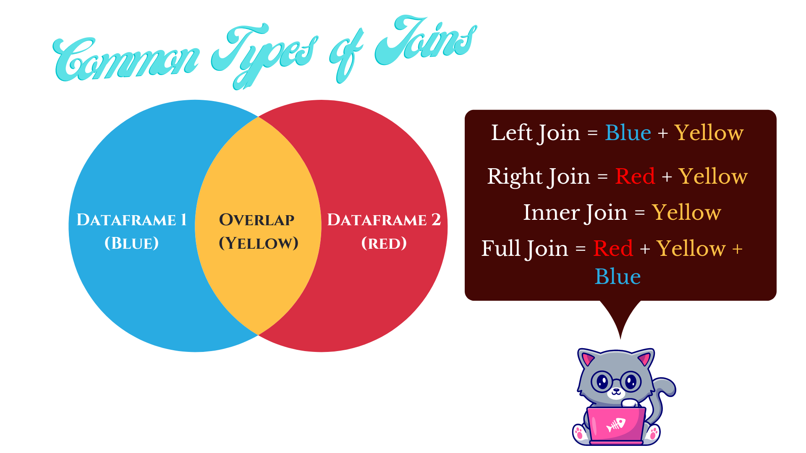
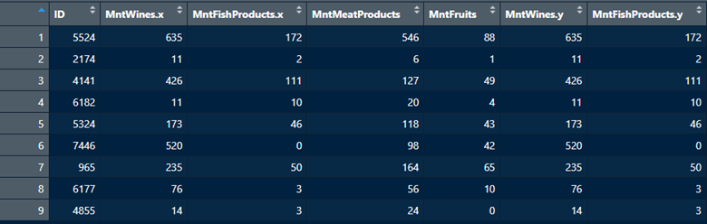
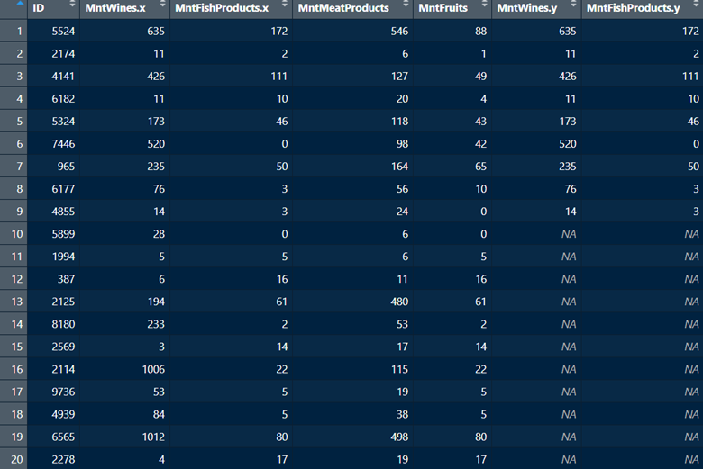
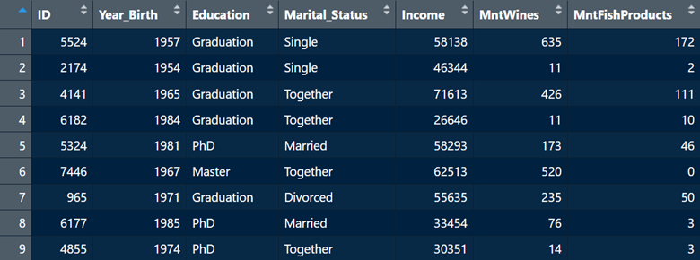
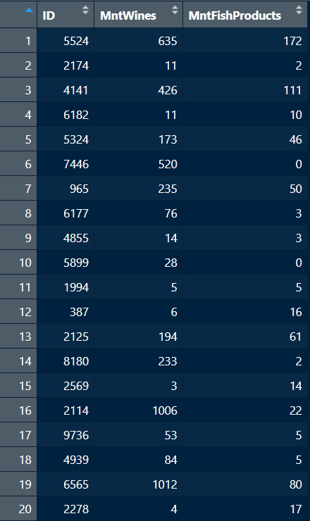

Which built-in R dataframe am I invoking with this image?
The data analyst’s task is often to combine multiple dataframes. We’ve already seen how to combine rows and columns with matrices in Section 4.2. Those of course are homogenous data structures (all elements have to be the same type). With dataframes we can have multiple types of data structures, and we commonly want to combine multiple dataframes. If two dataframes are already in the same order, and have the exact same number of rows, we can still use the cbind() function to append multiple columns. It’s usually safer to merge dataframes based on a key (usually an ID variable), but if the dataframes are sorted in the same order, and have the same number of rows, go ahead and trying the cbind() function.
Usually, there is some link such as an ID number for each observational unit that links the dataframes, but not always. Terminologically, combining data is often called merging, appending, or joining. The latter is commonly used with other programming languages like SQL, so we’ll stick to calling it joining or different types of data joins. Four commonly used types of data joins are presented in Figure 7.1.

Figure 7.1: Four common data join types. There are others, but we’ll leave those aside for now.
7.1 Left and Right Joins
Let’s look at an example of a left join using the left_join() function from the dplyr package. We’ll look at two dataframes which both have the same ID variable. So, what we want is a dataframe that takes the columns in one dataframe and adds them to the other dataframe, linked by a common ID variable.
library(dplyr)library(readxl)df1 <-read_xlsx("Datasets/marketing1.xlsx")df2 <-read_xlsx("Datasets/marketing2.xlsx")df3 <-read_xlsx("Datasets/marketing3.xlsx")head(df1, n =5)
# A tibble: 5 × 5
ID Year_Birth Education Marital_Status Income
<dbl> <dbl> <chr> <chr> <dbl>
1 5524 1957 Graduation Single 58138
2 2174 1954 Graduation Single 46344
3 4141 1965 Graduation Together 71613
4 6182 1984 Graduation Together 26646
5 5324 1981 PhD Married 58293
df4 <- df1 %>%left_join(df2,by =c("ID"="ID") )head(df4, n =5)
# A tibble: 5 × 7
ID Year_Birth Education Marital_Status Income MntWines MntFishProducts
<dbl> <dbl> <chr> <chr> <dbl> <dbl> <dbl>
1 5524 1957 Graduation Single 58138 635 172
2 2174 1954 Graduation Single 46344 11 2
3 4141 1965 Graduation Together 71613 426 111
4 6182 1984 Graduation Together 26646 11 10
5 5324 1981 PhD Married 58293 173 46
The left_join() function then returns all the rows from the first dataframe (df1 in this case) that match up with the rows in the second dataframe (df2 in this case). The right_join() function (also from the dplyr package) is the converse; it returns all the rows in the second dataframe (df2) that match up with the rows in first dataframe (df1). Functionally, it’s the same as the left_join() function, but notice how the rows in the second dataframe are now ordered first.
df5 <- df2 %>%right_join(df1,by =c("ID"="ID") )head(df5, n =5)
# A tibble: 5 × 7
ID MntWines MntFishProducts Year_Birth Education Marital_Status Income
<dbl> <dbl> <dbl> <dbl> <chr> <chr> <dbl>
1 5524 635 172 1957 Graduation Single 58138
2 2174 11 2 1954 Graduation Single 46344
3 4141 426 111 1965 Graduation Together 71613
4 6182 11 10 1984 Graduation Together 26646
5 5324 173 46 1981 PhD Married 58293
7.2 Inner and Full Joins
Let’s look at an example of an inner join, where the overlap between the two dataframes is retained. Using the inner_join() function from the dplyr package, we can merge two dataframes that have some common information (based on an ID variable). However, all rows in the second dataframe that do not correspond with the first will be dropped.
To create a new dataframe df6, we will join two dataframes (df3 and df2) that share the same nine rows (1:9), but df3 has an additional 11 rows (10:20) which df2 doesn’t have. df3 also has two columns that df2 does not have. Let’s see what happens when we merge them.
df6 <- df3 %>%inner_join(df2,by =c("ID"="ID") )

The merged dataframe df6 only retained the nine common rows between df2 and df3 (1:9). All other rows were deleted. Additionally, this function took all the columns in df2 and added them to df3, even if they are the same columns. In this case, R adds a little suffix to indicate the provenance of each column (.x and .y). This is not the most useful join, as you can see that it drops observations. However, it can be useful to examine the intersection of two dataframes.
Finally let’s look at a full join which combines everything - the unique aspects of both dataframes as well as the overlap. We will make use of the full_join() function from the dplyr package.
df7 <- df3 %>%full_join(df2,by =c("ID"="ID") )

In contrast with the inner join, the full join has added all rows across both dataframes. It also added all columns with the appropriate .x or .y suffix to columns shared between dataframes. Given that it added all rows, naturally there will be some columns for which there are no values. For example, rows 10:20 are not present in df2 and the variable MntFishProducts is present in df2. But after the merge, the values for MntFishProducts for rows 10:20 are missing NA.
7.3 Two Common Merging Scenarios
Practically, the data analyst typically faces two common data merging scenarios:
We want to add new columns to the same observational units.
We want to add new rows (also called appending) to the existing set of columns.
Let’s have a look at how to deal with both these scenarios.
# This is a case where we want to add new columns to the same observational units. This left join will add the columns from df2 to df1. Both dataframes have the same rows.df8 <- df1 %>%left_join(df2,by =c("ID"="ID") )

Now, we have a merged dataframe where we have added two new columns (MntWines and MntFishProducts from df2) to df1 and matched them based on ID. This is a scenario where you have, for example, multiple dataframes for same individuals.
Now, let’s look at a situation where we want to append new rows to an existing dataframe. This is a scenario where, for example, you have the same exact set of variables but data for different people across dataframes. First, we’ll modify our existing df3 so that it contains the exact same three variables (ID, MntWines, and MntFishProducts) as df2, but just has different rows. We will then use the base R rbind() function to append rows from df3 to df2.
# This will make df3 have the same variables as df2, but with different rows corresponding to individuals. df3 <- df3[-c(1:9), -c(4:5)]# Now, we will merge df2 and df3 into a new dataframe df9. This will append rows from df3 to df2. df9 <-rbind(df2, df3)

As we see from the screenshot above, we have now appended rows 10:20 from df3 to rows 1:9 from df2.
7.4 Reshaping Data
When we think about collecting data about some phenomenon over time, or of taking multiple measurements from the same observational unit, the a dataframe comes in one of two different formats: wide or long. A wide dataframe means that an observational unit’s repeated responses are found on a single row, whereas a long dataframe means that each row corresponds to just one time point for our observational unit. Wide format might be easier to read when looking at change over time, but long format is often useful for particular statistical analyses. Thus, it’s helpful to know how to reshape a dataframe from long to wide, and vice versa.
7.4.1 From long to wide
Let’s look at an example with a dataframe ncaabball which contains information on certain NCAA Basketball team over a three-year period from 2015 to 2017.
ncaabball <-read.csv("~/R Book/Datasets/ncaabball.csv",header =TRUE)head(ncaabball, n =15)
Currently, the dataframe is in long format, because the individual teams are listed on multiple rows. Let’s say we want a wide format in which each team only gets one row, and there become three columns corresponding to each of the three years with values in those cells corresponding to the number of wins per year. Let’s then reshape this dataframe from long to wide using the pivot_longer() function from the tidyr package, which is part of the tidyverse.
The names_from argument specifies which variable we want to make into separate columns. The values_from argument specifies what should go into the cells of our new set of columns. In this case, we want the values from the Wins column to be included in our new set of columns. Finally, we leverage the names_glue argument to specify the naming for our new columns. Here, we want the Year value to be followed by a space, and then the word Wins which corresponds to our values variable.
library(tidyverse)# Let's reshape from long to wide so each year is on one row.ncaabball_wide <- ncaabball %>%pivot_wider(names_from = Year,values_from = Wins,names_glue ="{Year} {.value}") ## This is saying "use the existing column name for the column listed in the "names_from" argument, add a space, and then add the existing column name from the column listed in the "values_from" argument. ## You can also customize the column names with string text outside of curly braces.ncaabball_wide2 <- ncaabball %>%pivot_wider(names_from = Year,values_from = Wins,names_glue ="Wins in {Year}") # The dataframe is now in wide format with each year having its own column.head(ncaabball_wide)
head(ncaabball_wide2) ## Notice how the column names are different from ncaabball_wide.
# A tibble: 5 × 4
Team `Wins in 2015` `Wins in 2016` `Wins in 2017`
<chr> <int> <int> <int>
1 Illinois 19 15 20
2 Indiana 20 27 18
3 Iowa 22 22 19
4 Maryland 28 26 24
5 Michigan 15 22 26
7.4.2 From wide to long
Alright, now let’s say we want to go back to long from wide. What this means is that our three columns 2015 (Wins), 2016 (Wins), and 2017 (Wins) will now become individual rows. They will now be in their own column, which we’ll have to name. Then the values under 2015 (Wins), 2016 (Wins), and 2017 (Wins) in the ncaabball_wide dataframe will have to be gathered and become rows in their own column, which we will also have to name. In summary, the wide dataframe with five rows and four columns will become a long datafame with 15 rows and three columns.
To accomplish this, we will use the pivot_longer() function also from the tidyr package. The first argument cols specifies the columns by name which will become individual rows. Next, the names_to argument specifies the name of the new column that will be created for our previous column variables. The values_to argument species the name of the new column under which we’ll gather all the values from our previous columns (these correspond to game wins).
# Let's reshape from wide to long so each year gets its own row.## Because we no longer want the word 'Wins' listed after the year, we'll use a specific syntax in the names_pattern argument to only retain the first four characters, which corresponds to the year.ncaabball_long <- ncaabball_wide %>%pivot_longer(cols =c("2015 Wins", "2016 Wins", "2017 Wins"),names_to ="Year",names_pattern ="(....)",values_to ="Wins" )head(ncaabball_long, n =15)
And just like that, we are back to long format using the pivot_longer() function. Remember, reshaping is mainly about readability and preparing the data for particular statistical procedures. Some procedures require the data to be in long format, while others require the data to be in wide format. Therefore, it’s useful to know how to transition from one format to another.
7.5 Exercises
As always, it’s a good idea to attempt these while the material is still fresh. You can find the answers in Appendix D.
Assign the built-in dataframe Orange to an object named whatever you want. This dataframe relates to the age and circumference of orange trees. First, with respect to the specific tree, is the dataframe in long or wide format? Please explain your answer.
Once again with respect to individual trees, reshape the dataframe. If you believe it is in long format, reshape to wide (hint: this is the correct answer). Assign the reshaped dataframe to a new object with a name that indicates the reshaped nature of the data (e.g., “tree_wide”). What you want to see is a dataframe where each row corresponds to age, and separate columns listing the circumference of each tree. Use an approach you have seen to name each column “Tree (number) circumference”. For example, the first tree column should be named “Tree 1 circumference”, the second should be called “Tree 2 circumference”, and so on. Once you have finished, use the head() function to show the first five rows of the reshaped dataframe.
Let’s go backwards. Take the wide dataframe from Question 2, and reshape into long format, assigning this to a new object with a name noting that the new dataframe is in long format (e.g. “tree_long”). Here, we want each row to correspond to a tree, and separate columns for age and circumference, labelled as such. Then, use a command that you’ve seen before to make the new tree column come first in order in the dataframe. Finally, use the head() to show the first five rows of the new dataframe.
Let’s go back to the original Orange dataframe, or the object to which you initially assigned it. Next, we’re going to create two new dataframes tree2 and tree3 using the code below. We’re also going to create an ID variable for the two dataframes with the same rows in order to have unique indices for each row.
# I assign the Orange dataframe to an object called tree.tree <- Orange# I then create a vector of values which will populate a new column.newage <- tree$circumference/2.5# I then create a vector corresponding to values listed in the Tree column in the original dataframe.treeid <- tree$Tree# I then create a new dataframe with two variables. It takes the original dataframe's Tree column, and adds a new age category using the newage vector created above.tree2 <-data.frame(Tree = treeid,"Age_years"= newage)# I then create a new dataframe with three columns and seven rows. These will be appended to tree2 later.tree3 <-data.frame(Tree =c(rep(6, 7)),"Age_years"=c(10.4, 21.2, 30.4, 41.3, 55.8, 66.7,71.4),ID =c(seq(from =36, to =42) ) )# I then make sure the Tree column in tree3 matches the class (ordered factor) of the Tree column in the original dataframe. This is needed for merging later.tree3$Tree <-ordered(tree3$Tree) # I then create a unique ID variable in the original dataframe and in tree2 which will be used for merging later.tree$ID <-1:nrow(tree)tree2$ID <-1:nrow(tree2)
Create a new dataframe tree4 that merges tree2 with the Orange dataframe or whatever object you assigned it to. Note, what we want here is to add a new column Age (Years) to the same rows or observational units. The ID variable we created above should be used to link the dataframes. Once the merge is complete, print the first six rows of the merged dataframe to make sure it worked.
Now create a new dataframe tree5 which appends rows from tree3 to the tree2 dataframe we created in Question 2. Once the merge is complete, print the last seven rows of the merged dataframe to make sure it worked.